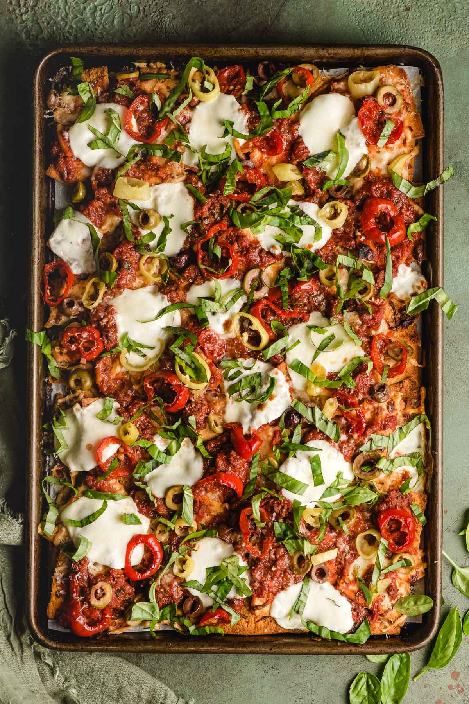

Italian Nachos

Yield: 4 Prep Time: 10 Minutes Cook Time: 15 Minutes
These quick Italian Nachos are loaded with three kinds of cheese, spaghetti sauce, and bright, puckery olives and banana peppers. Made in less than 30 minutes, these nachos are a great weeknight meal or appetizer.
INGREDIENTS
- 15 oz. Parmesan garlic pita chips
- 4 oz. shredded Italian cheese blend
- 1 1/2 cups leftover spaghetti sauce with ground beef
- 4 ounces fresh mozzarella, thinly sliced
- 1/2 cup assorted marinated vegetables (banana peppers, peppadew peppers, green and black olives)
- Fresh basil, chopped
- Shredded Parmesan cheese, optional
Instructions:
- Preheat the oven to 400 degrees.
- Line a half sheet pan with foil or parchment paper. Spread the chips evenly over the top. Sprinkle with the Italian cheese blend, then bake for 6-7 minutes, or until the cheese is melted.
- Remove the pan from the oven, then dollop with spaghetti sauce, and top with rounds of fresh mozzarella and the pickled vegetables. Return to the oven and bake for another 6 minutes, then turn the oven off and the broiler on. Broil for 2-3 minutes, or until the cheese is melted and starting to brown.
- Top with fresh basil and shredded Parmesan cheese, and serve immediately.